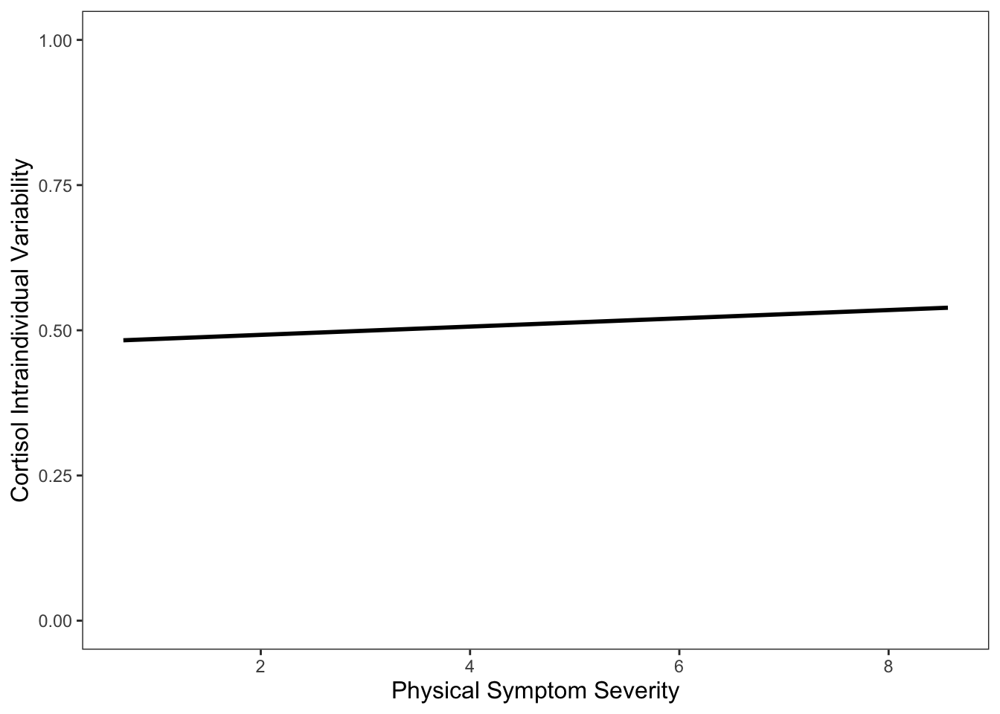
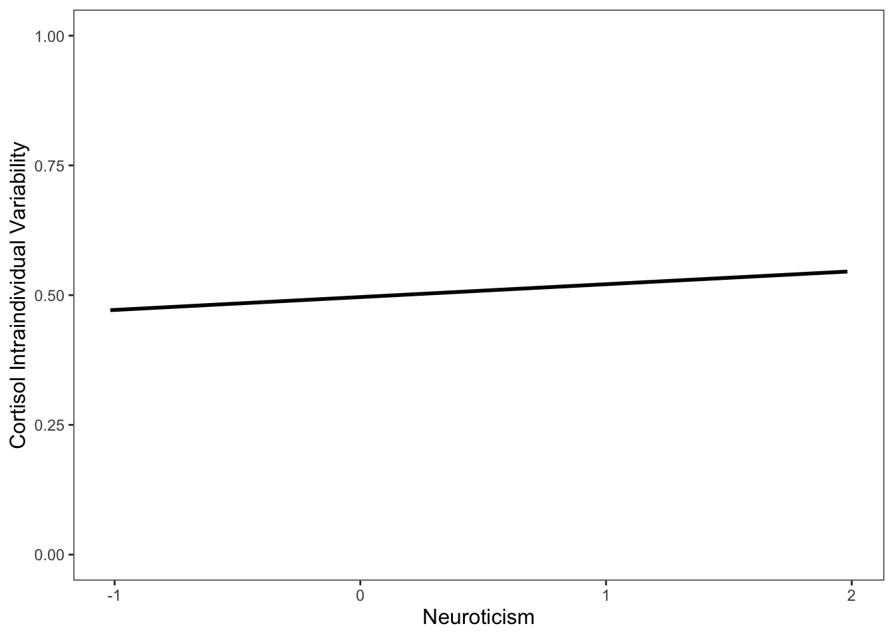

Last updated: 2020-07-08
Checks: 6 1
Knit directory: dissertation/
This reproducible R Markdown analysis was created with workflowr (version 1.6.0). The Checks tab describes the reproducibility checks that were applied when the results were created. The Past versions tab lists the development history.
Great! Since the R Markdown file has been committed to the Git repository, you know the exact version of the code that produced these results.
Great job! The global environment was empty. Objects defined in the global environment can affect the analysis in your R Markdown file in unknown ways. For reproduciblity it’s best to always run the code in an empty environment.
The command set.seed(20200414) was run prior to running the code in the R Markdown file. Setting a seed ensures that any results that rely on randomness, e.g. subsampling or permutations, are reproducible.
Great job! Recording the operating system, R version, and package versions is critical for reproducibility.
Nice! There were no cached chunks for this analysis, so you can be confident that you successfully produced the results during this run.
Using absolute paths to the files within your workflowr project makes it difficult for you and others to run your code on a different machine. Change the absolute path(s) below to the suggested relative path(s) to make your code more reproducible.
| absolute | relative |
|---|---|
| /Users/Santi/Desktop/rProjects/dissertation/analysis/big5Analysis.Rmd | analysis/big5Analysis.Rmd |
Great! You are using Git for version control. Tracking code development and connecting the code version to the results is critical for reproducibility. The version displayed above was the version of the Git repository at the time these results were generated.
Note that you need to be careful to ensure that all relevant files for the analysis have been committed to Git prior to generating the results (you can use wflow_publish or wflow_git_commit). workflowr only checks the R Markdown file, but you know if there are other scripts or data files that it depends on. Below is the status of the Git repository when the results were generated:
Ignored files:
Ignored: .DS_Store
Ignored: .Rhistory
Ignored: .Rproj.user/
Ignored: analysis/.DS_Store
Ignored: analysis/ICPSR_04652 3/.DS_Store
Ignored: analysis/ICPSR_04652 3/DS0001/.DS_Store
Ignored: analysis/ICPSR_26841/.DS_Store
Ignored: analysis/ICPSR_26841/DS0001/.DS_Store
Ignored: analysis/big5Analysis.nb.html
Ignored: analysis/big5DataInspection.nb.html
Ignored: analysis/big5DataWrangling.nb.html
Ignored: analysis/rslTable.html
Untracked files:
Untracked: analysis/big5Analysis.R
Untracked: analysis/big5Analysis.RData
Untracked: analysis/big5Analysis.Rmd
Untracked: analysis/big5AnalysisDat.csv
Untracked: analysis/big5Dat.csv
Untracked: analysis/big5DataInspection.R
Untracked: analysis/big5DataInspection.Rmd
Untracked: analysis/big5DataWrangling.R
Untracked: analysis/big5DataWrangling.Rmd
Untracked: analysis/chapter3.pdf
Untracked: analysis/chapter3.tex
Untracked: analysis/hyp1Dat.csv
Untracked: analysis/hyp2Dat.csv
Untracked: analysis/lmeResidsPerDay.csv
Untracked: analysis/manuscript copy.docx
Untracked: analysis/manuscript.docx
Untracked: analysis/manuscript.log
Untracked: analysis/manuscript.pdf
Untracked: analysis/manuscript.tex
Untracked: analysis/manuscript/
Untracked: analysis/rslTable
Untracked: analysis/rslTable1
Untracked: analysis/rslTable2
Untracked: analysis/~$nuscript.docx
Untracked: analysis/~$ssertation_1.8.20.docx
Untracked: big5Dat.csv
Untracked: refs.bib
Unstaged changes:
Modified: analysis/ICPSR_26841/DS0001/26841-0001-Documentation-saliva.pdf
Modified: analysis/chapter1.Rmd
Deleted: analysis/dataInspection.Rmd
Deleted: analysis/dataWrangling.Rmd
Modified: analysis/hypotheses.Rmd
Modified: analysis/manuscript.Rmd
Modified: analysis/refs.bib
Note that any generated files, e.g. HTML, png, CSS, etc., are not included in this status report because it is ok for generated content to have uncommitted changes.
These are the previous versions of the R Markdown and HTML files. If you’ve configured a remote Git repository (see ?wflow_git_remote), click on the hyperlinks in the table below to view them.
| File | Version | Author | Date | Message |
|---|---|---|---|---|
| Rmd | f6bf459 | sallende | 2020-07-08 | chapt2,3 |
include BH p valuye correction and std coef
The robust regression predicting cIIV as a function of openness to experience, age and education was significant, \((F(4, 1536) = 10.43, p < .0001)\) (Table 1). Cortisol IIV was negatively associated with age and education but positively associated with smoking status, \((b = -0.002, \beta = -0.1, se = 0.0004, t = -4.9, p = 0)\), \((b = -0.0053, \beta = -0.06, se = 0.0021, t = -2.52, p = 0.0119)\) and \((b = 0.0361, \beta = 0.05, se = 0.0158, t = 2.29, p = 0.0119)\) respectively. Contrary to hypothesis 1, openness to experience was not associated with cIIV, \((b = -0.0106, \beta = -0.02, se = 0.0096, t = -1.11, p = 0.2663)\).
The robust regression predicting cIIV as a function of extraversion, age and education was significant, \((F(4, 1547) = 9.73, p < .0001)\) (Table 2). Cortisol IIV was negatively associated with age and education but positively associated with smoking status, \((b = -0.002, \beta = -0.1, se = 0.0004, t = -4.8, p = 0)\), \((b = -0.0057, \beta = -0.06, se = 0.0021, t = -2.77, p = 0.0057)\) and \((b = 0.0339, \beta = 0.05, se = 0.0158, t = 2.14, p = 0.0057)\), respectively. Contrary to hypothesis 2, extraversion was not associated with cIIV, \((b = -0.0053, \beta = -0.01, se = 0.0087, t = -0.61, p = 0.5421)\).
The robust regression predicting cIIV as a function of agreeableness, age and education was significant, \((F(4, 1547) = 10.2, p < .0001)\) (Table 1). Cortisol IIV was negatively associated with age and education but positively associated with smoking status, \((b = -0.002, \beta = -0.1, se = 0.0004, t = -4.7, p = 0)\), \((b = -0.0059, \beta = -0.06, se = 0.0021, t = -2.86, p = 0.0043)\) and \((b = 0.0337, \beta = 0.05, se = 0.0158, t = 2.13, p = 0.0043)\) respectively. Contrary to hypothesis 3, agreeableness was not associated with cIIV, \((b = -0.0158, \beta = -0.03, se = 0.0102, t = -1.55, p = 0.1229)\).
The robust regression predicting cIIV as a function of neuroticism, age and education was significant, \((F(4, 1547) = 11.54, p < .0001)\) (Table 1). Cortisol IIV was negatively associated with age and education but positively associated with smoking status, \((b = -0.0018, \beta = -0.09, se = 0.0004, t = -4.11, p = 0)\) and \((b = -0.005, \beta = -0.05, se = 0.0021, t = -2.41, p = 0.016)\) and \((b = 0.0322, \beta = 0.04, se = 0.0158, t = 2.03, p = 0.016)\) respectively. In support of hypothesis 4, neuroticism was positively associated with cIIV, \((b = 0.0322, \beta = 0.06, se = 0.0158, t = 2.03, p = 0.0058, \alpha = 0.02)\) (Figure 1).
The robust regression predicting cIIV as a function of conscientiousness, age and education was significant, \((F(4, 1547) = 10.11, p < .0001)\) (Table 2). Cortisol IIV was negatively associated with age and education but positively associated with smoking status, \((b = -0.0021, \beta = -0.1, se = 0.0004, t = -4.92, p = 0)\), \((b = -0.0057, \beta = -0.06, se = 0.0021, t = -2.76, p = 0.0059)\) and \((b = 0.033, \beta = 0.04, se = 0.0159, t = 2.08, p = 0.0059)\), respectively. Contrary to hypothesis 5, extraversion was not associated with cIIV, \((b = -0.015, \beta = -0.03, se = 0.0114, t = -1.32, p = 0.186)\).
The robust regression predicting cIIV as a function of number of physical symptoms, age and education was significant, \((F(4, 1583) = 11.21, p < .0001)\) (Table 2). Cortisol IIV was negatively associated with age and education but positively associated with smoking status, \((b = -0.0021, \beta = -0.11, se = 0.0004, t = -5.12, p = 0)\), \((b = -0.0053, \beta = -0.05, se = 0.002, t = -2.6, p = 0.0094)\) and \((b = 0.0374, \beta = 0.05, se = 0.0157, t = 2.39, p = 0.0094)\) respectively. Contrary to hypothesis 6, number of physical symptoms was not associated with cIIV, \((b = 0.004, \beta = 0.03, se = 0.0029, t = 1.39, p = 0.1686)\).
The robust regression predicting cIIV as a function of physical symptom severity, age and education was significant, \((F(4, 1591) = 12.27, p < .0001)\) (Table 2). Cortisol IIV was negatively associated with age and education but positively associated with smoking status, predicted cIIV, \((b = -0.0021, \beta = -0.11, se = 0.0004, t = -5.18, p = 0)\), \((b = -0.0047, \beta = -0.05, se = 0.0021, t = -2.3, p = 0.0218)\) and \((b = 0.0345, \beta = 0.05, se = 0.0156, t = 2.21, p = 0)\), respectively. In support of hypothesis 7, physical symptom severity was positively associated with cIIV, \((b = 0.0105, \beta = 0.06, se = 0.0036, t = 2.88, p < 0.1229, \alpha = 0.02\) (Figure 2).
| Neuroticism | Conscientiousness | Openness to Experience | Agreeableness | |||||||||
|---|---|---|---|---|---|---|---|---|---|---|---|---|
| Predictors | Estimates | CI | p | Estimates | CI | p | Estimates | CI | p | Estimates | CI | p |
| Intercept | 0.54 | 0.52 – 0.57 | <0.001 | 0.55 | 0.52 – 0.58 | <0.001 | 0.54 | 0.52 – 0.57 | <0.001 | 0.55 | 0.52 – 0.58 | <0.001 |
| Age | -0.00 | -0.00 – -0.00 | <0.001 | -0.00 | -0.00 – -0.00 | <0.001 | -0.00 | -0.00 – -0.00 | <0.001 | -0.00 | -0.00 – -0.00 | <0.001 |
| Education | -0.00 | -0.01 – -0.00 | 0.016 | -0.01 | -0.01 – -0.00 | 0.006 | -0.01 | -0.01 – -0.00 | 0.012 | -0.01 | -0.01 – -0.00 | 0.004 |
| Smoker | 0.03 | 0.00 – 0.06 | 0.042 | 0.03 | 0.00 – 0.06 | 0.037 | 0.04 | 0.01 – 0.07 | 0.022 | 0.03 | 0.00 – 0.06 | 0.033 |
| Neuroticism | 0.02 | 0.01 – 0.04 | 0.006 | |||||||||
| Consientiousness | -0.02 | -0.04 – 0.01 | 0.187 | |||||||||
| Openness to Experience | -0.01 | -0.03 – 0.01 | 0.266 | |||||||||
| Agreeableness | -0.02 | -0.04 – 0.00 | 0.121 | |||||||||
| Observations | 1552 | 1552 | 1541 | 1552 | ||||||||
| Extraversion | Number of Physical Symptoms | Physical Symptom Severity | |||||||
|---|---|---|---|---|---|---|---|---|---|
| Predictors | Estimates | CI | p | Estimates | CI | p | Estimates | CI | p |
| Intercept | 0.55 | 0.52 – 0.58 | <0.001 | 0.54 | 0.51 – 0.57 | <0.001 | 0.52 | 0.48 – 0.55 | <0.001 |
| Age | -0.00 | -0.00 – -0.00 | <0.001 | -0.00 | -0.00 – -0.00 | <0.001 | -0.00 | -0.00 – -0.00 | <0.001 |
| Education | -0.01 | -0.01 – -0.00 | 0.006 | -0.01 | -0.01 – -0.00 | 0.009 | -0.00 | -0.01 – -0.00 | 0.022 |
| Smoker | 0.03 | 0.00 – 0.06 | 0.033 | 0.04 | 0.01 – 0.07 | 0.017 | 0.03 | 0.00 – 0.07 | 0.027 |
| extraversion | -0.01 | -0.02 – 0.01 | 0.541 | ||||||
|
Average Number of Physical Symptoms |
0.00 | -0.00 – 0.01 | 0.165 | ||||||
|
Average Physical Symptom Severity |
0.01 | 0.00 – 0.02 | 0.004 | ||||||
| Observations | 1552 | 1588 | 1596 | ||||||

Figure 1: …

Figure 2: …
sessionInfo()R version 3.5.1 (2018-07-02)
Platform: x86_64-apple-darwin15.6.0 (64-bit)
Running under: macOS Sierra 10.12.6
Matrix products: default
BLAS: /Library/Frameworks/R.framework/Versions/3.5/Resources/lib/libRblas.0.dylib
LAPACK: /Library/Frameworks/R.framework/Versions/3.5/Resources/lib/libRlapack.dylib
locale:
[1] en_US.UTF-8/en_US.UTF-8/en_US.UTF-8/C/en_US.UTF-8/en_US.UTF-8
attached base packages:
[1] stats graphics grDevices utils datasets methods base
other attached packages:
[1] sfsmisc_1.1-2 MASS_7.3-50 nlme_3.1-145 forcats_0.5.0
[5] stringr_1.4.0 dplyr_0.8.4 purrr_0.3.3 readr_1.3.1
[9] tidyr_1.0.2 tibble_2.1.3 ggplot2_3.3.0 tidyverse_1.2.1
[13] workflowr_1.6.0
loaded via a namespace (and not attached):
[1] fs_1.3.1 lubridate_1.7.4 insight_0.8.4 httr_1.3.1
[5] rprojroot_1.3-2 tools_3.5.1 backports_1.1.4 R6_2.4.1
[9] sjlabelled_1.1.4 mgcv_1.8-24 colorspace_1.3-2 withr_2.1.2
[13] tidyselect_1.0.0 emmeans_1.4.4 compiler_3.5.1 git2r_0.26.1
[17] performance_0.4.6 cli_2.0.2 rvest_0.3.2 xml2_1.2.0
[21] sandwich_2.5-0 labeling_0.3 bayestestR_0.6.0 scales_1.1.0
[25] mvtnorm_1.0-8 digest_0.6.25 minqa_1.2.4 rmarkdown_1.13
[29] pkgconfig_2.0.3 htmltools_0.3.6 lme4_1.1-21 highr_0.8
[33] rlang_0.4.5 readxl_1.3.1 rstudioapi_0.11 farver_2.0.3
[37] generics_0.0.2 apaTables_2.0.5 zoo_1.8-4 jsonlite_1.6
[41] sjPlot_2.8.4 magrittr_1.5 parameters_0.8.0 Matrix_1.2-14
[45] Rcpp_1.0.4 munsell_0.5.0 fansi_0.4.1 lifecycle_0.2.0
[49] stringi_1.4.6 multcomp_1.4-8 whisker_0.3-2 yaml_2.2.1
[53] grid_3.5.1 promises_1.0.1 sjmisc_2.8.4 crayon_1.3.4
[57] lattice_0.20-35 ggeffects_0.14.3 haven_2.2.0 splines_3.5.1
[61] jtools_2.1.0 pander_0.6.2 sjstats_0.18.0 hms_0.5.3
[65] knitr_1.28 pillar_1.4.3 boot_1.3-20 estimability_1.3
[69] effectsize_0.3.1 codetools_0.2-15 glue_1.3.2 evaluate_0.14
[73] modelr_0.1.2 nloptr_1.2.2.1 vctrs_0.2.4 httpuv_1.4.5
[77] cellranger_1.1.0 gtable_0.3.0 assertthat_0.2.1 xfun_0.12
[81] xtable_1.8-3 broom_0.5.2 coda_0.19-1 later_0.7.4
[85] survival_2.42-6 TH.data_1.0-9